The Medication Delivery and Collection feature in Meddbase allows clinicians to make, sign, and send E-Prescriptions electronically to SignatureRx, an online pharmacy that dispenses Meddbase prescriptions and delivers them to patients. In addition to delivery, following recent updates, medication can now also be collected from a local pharmacy should they prefer this to delivery.
The Medication Delivery and Collection feature is fully compliant with the Human Medicines Regulations 2012 providing a legal, safe, and efficient way to prescribe and deliver medication straight to a patient in need, mitigating the need for administratively heavy or paper processes.
The Medication Delivery and Collection feature is an update to the existing Medication Delivery capabilities. With this latest update, patients can choose to have their medication delivered to them as well as choosing to collect medication from their nearest pharmacy.
WARNING
Per UK legislation, schedule 2 and 3 controlled drugs cannot be E-Prescribed. Any controlled drugs that are E-prescribed via this feature will not be processed and supplied to patients.
This article explains:
To be able to successfully create, send and sign an E-Prescription, pre-requisite data and configuration is needed for a prescribing clinician and separately for a patient. These prerequisites are described below.
Prescribing clinician
| Item | What is needed? | Further explanation |
| 1 | A clinician record in Meddbase. | Click here for more details on Adding a Clinician. |
| 1.1 | A value in the Suffix field on the clinician record. | This is for the prescriber's particulars so the type of prescriber is known. Examples would be e.g. MRCGP, DPDerm, BSC (Hons) etc. |
| 1.2 | A registration number in the Registration number field on the clinician record. | This should be added in the following format - professional body e.g. GMC, GPhC, NMC followed by the pin/no. |
| 1.3 | An address in the clinician address fields. | This is the prescriber's address. As a minimum, it needs values in Address line 1 and Postcode. |
| 1.4 | Security permissions set to allow prescribing | Click here for more details on security policies. |
| 1.5 | Registration with SignatureRx | Please see below How to register with SignatureRx as a clinician |
Patient
| Item | What's is needed? | Further explanation |
| 1 | A patient record in Meddbase. | Click here for more details on How to add a patient to Meddbase. |
| 1.1 | A Full name for the patient record. | This means the First name and Last name of the patient need to have values as a minimum |
| 1.2 | A Date of birth | This means the full date of birth including day, month, and year. |
| 1.3 | A patient address. | As a minimum, it needs values in Address line 1 and Postcode. |
Before a clinician and a clinic can be added to SignatureRx, the Medication Delivery needs to be enabled inside the chamber.
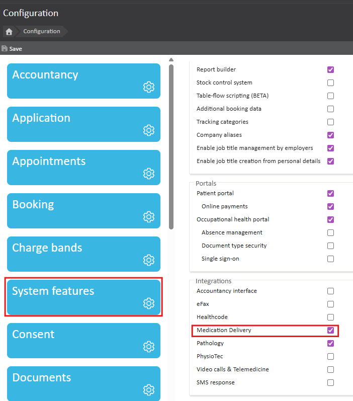
Once the above steps have been configured and saved, a clinic needs to be registered.
To do this:-
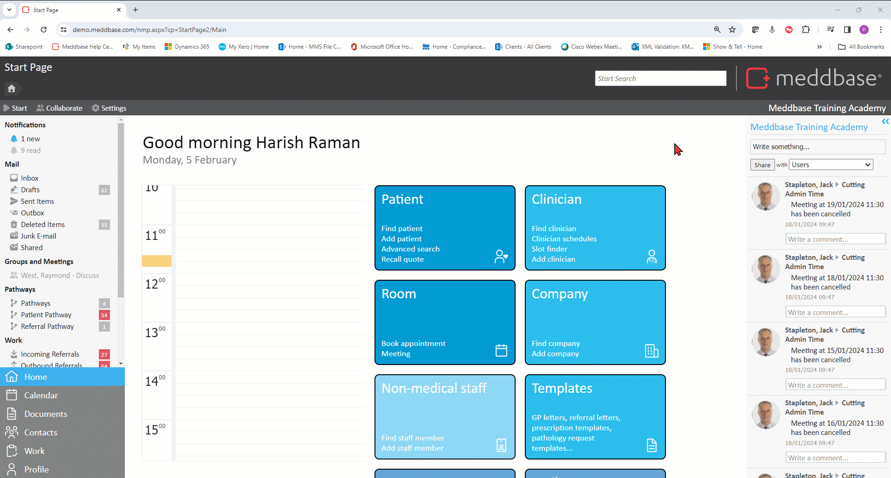
Clicking the Configure SignatureRx clinic button opens the Signature RX configure clinic dialog window where the following details can be added:
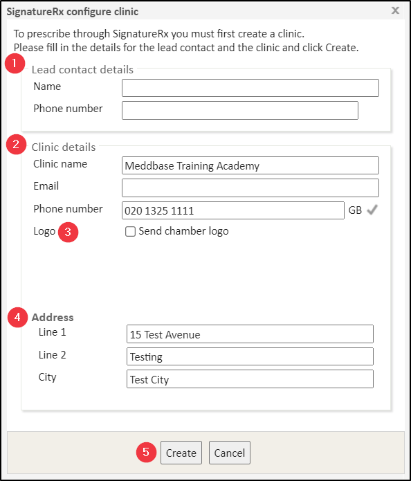
Once the above form has been filled out accordingly, click Save to apply your settings.
For a prescribing clinician, within the clinician details, there is a SignatureRx Registration button available on the toolbar.
This button is only available for Clinicians to self-register. It will only appear on their own clinician record when they are logged in. It will not appear for other clinicians so other users cannot register for them.
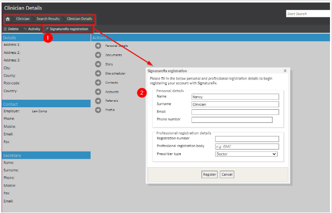
Where it is mentioned Prescriber Type, this option has a drop-down list to select the appropriate clinical role:
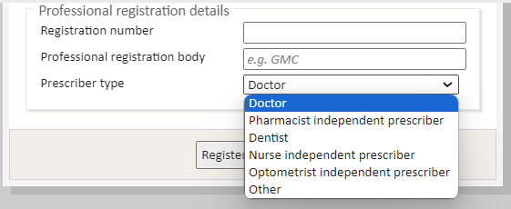
Once the above pre-requisite steps have been completed, you will receive a success message notifying you of successful registration:
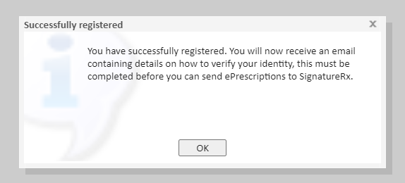
There are three options for verifying with SignatureRx as a clinician. These are as follows:
1. The doctor needs to verify with ID -This is for a new doctor/prescriber on the system. They are sent an email and asked to complete the registration form/ID check.)
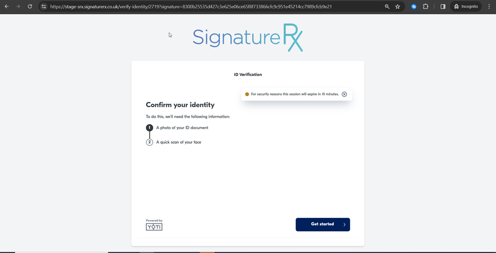
2. Existing SignatureRx doctor -This is for existing SignatureRx doctors who want to use the integration. If the email on Meddbase is the same as SignatureRx for the prescriber, they will automatically move to verification status.
3. Auto-verify prescribers - This is predominantly for larger clinics (20 or more) to check how they verify their prescriber registration process i.e. how do they verify prescribers, how do they verify identification checks, do they have the right to work, etc. This is all communicated in a self-declaration form. Once the form is completed and sent to SignatureRx, they will then enable auto-verification.
If a clinician is not registered or verified then they will not be able to E-Prescribe any medication!
Once the feature is fully set up in Meddbase, a Medical User can make an electronic prescription. This begins in a clinical form within a consultation in Meddbase.
To create the E-Prescription, the Medical User can do as follows:-
1. When in Consultation, navigate to the Actions section at the bottom of the clinical form
2. Click Prescribe
3. In the Create a Prescription dialog, search for the required drug (typing in 3 or more letters will trigger the search in the First Data Bank drug database)
4. From the list, click the desired drug
5. In the Preparations Warnings dialog that appears, click Accept Warnings (this step can not be bypassed)
6. On the Details tab, click on the required value for Dosage, Manufacturer pack and Frequency of use from the available list.
7. Add further details as needed for Quantity, Route of Administration, Method, Duration, Review, Comments (internal), Comments (for pharmacist) as needed
8. Click Save and E-Prescribe
If the user wants to prescribe multiple drugs, go to step (1.1), and if not to skip to Step 2.
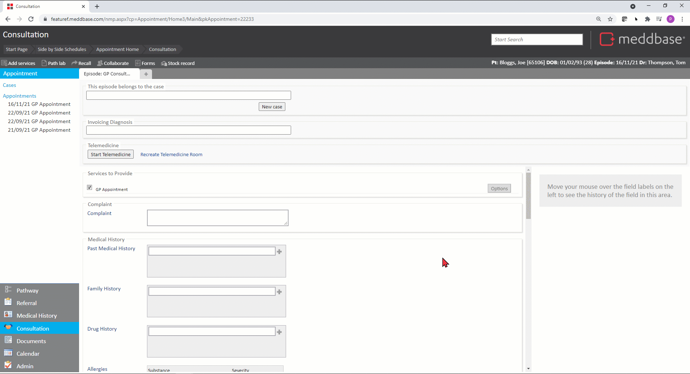
A Medical User can also E-Prescribe multiple drugs simultaneously from the 'Today's Prescriptions' section of the Clinical Form:-
1. Prescribe the required drug as per Step 1
2. Click *Save (as opposed to 'Save an E-Prescribe')
3. Repeat for all required drugs.
*The prescribed drug will be displayed in the 'Today's Prescriptions' section
4. Once all required drugs are prescribed, click E-Prescribe.
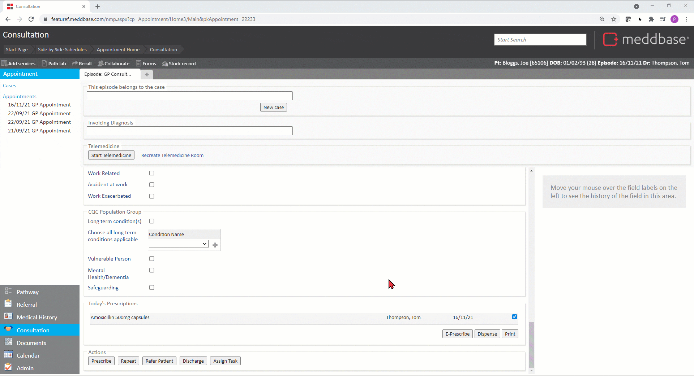
The Medical user is now presented with the Send Electronic Prescription dialog window. This provides options and requires the following steps to be carried out:
1. Check the patient's details (i.e. the email address and mobile number) and update them both as needed.
2. Check the prescription Delivery details are set to Collection or Delivery.
3. Check in the Issue For option, a selection has been made for either collection or delivery. The options for review and update are:
4. Check the *Prescription and tick or untick drugs as needed.
*Had the Medical User prescribed multiple drugs as per Step 1.1, multiple lines will be displayed in this section
*Any un-actioned prescriptions in the consultation phase of the prescribing will automatically be added to the prescription - this must be manually changed if the prescription is not required at the current time
5. Check the 2 mandatory tick box options in red stating:
"Patient has consented that their data for the prescription is shared with the ePrescribing pharmacy." "Patient has consented to receiving email updates about their prescription."
6. There is also an option tick box to be checked as follows:
"Patient has consented to receiving SMS updates about their prescription"
7. Click on Sign.
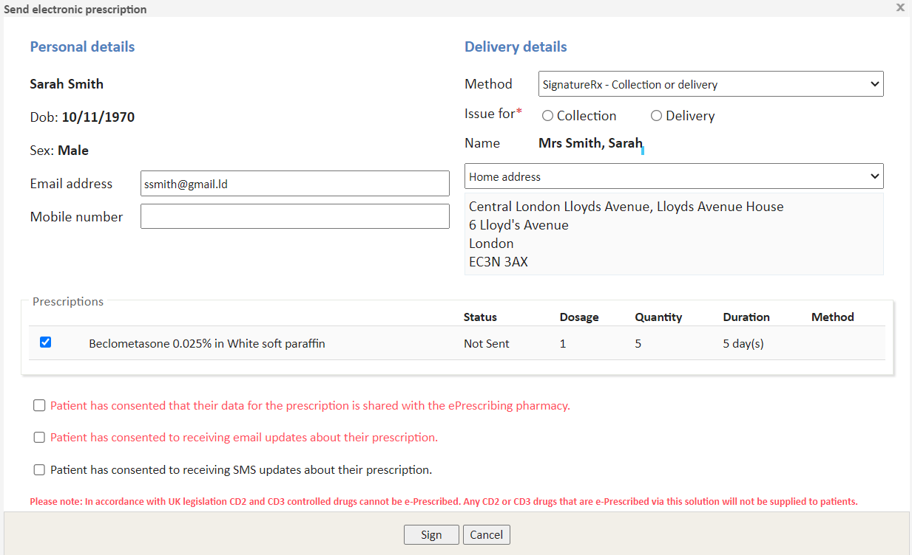
Once the clinician has signed and confirmed their identity, a confirmation box will pop up asking them to finalise the e-prescription
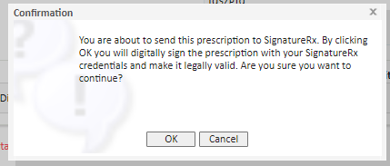
If a non-registered clinician attempts to e-prescribe they will get the below message at the 'Sign' stage of the process.
"Not registered"
You are currently not registered to send ePrescriptions to SignatureRx. would you like to register now?"
Please follow the steps on How to register with SignatureRx as a clinician.
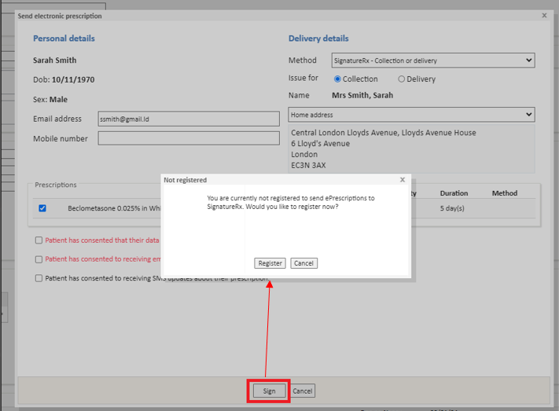
*Once the E-Prescription has been sent and is received by SignatureRx, Meddbase will be updated with a Prescription ID (next to the Status column - see screenshot below in Prescription Status updates)
If a clinician has registered with the Medication Delivery and Collection service but has not had their ID verified, then they will need to wait for their verification to be approved before they can sign for a prescription. Steps on verification can be found on How to register and verify with SignatureRx as a clinician. The below warning will show on signing an E-Prescription if the clinician is not verified.
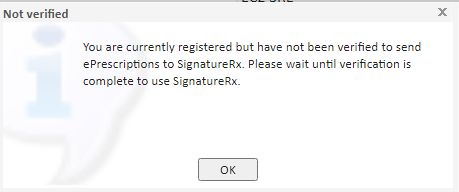
Once the prescription is updated in SignatureRx, the status updates will be sent and will be made viewable in Meddbase within the patient's Medical History or Today's Prescriptions:
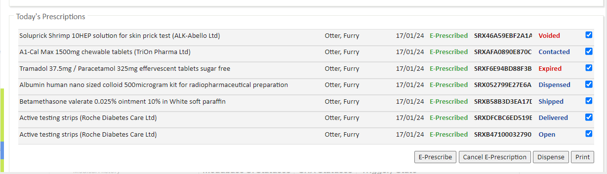
There are a total of 6 statuses:
| Meddbase UI Statuses | State |
| Open | Default first state once the E-Prescription is signed. |
| Dispensed | Collection only: Pharmacist has dispensed the prescription Delivery: Patient has paid for their prescription with Signature Pharmacy |
| Voided | Cancelled before it was dispensed (and can no longer be dispensed) |
| Expired | After 6 months from the date of writing a prescription is expired automatically in line with regulation |
| Shipped | Delivery only Occurs after SignatureRx has shipped the prescription |
| Delivered | Delivery only Occurs when the patient has received the medicine at their address |
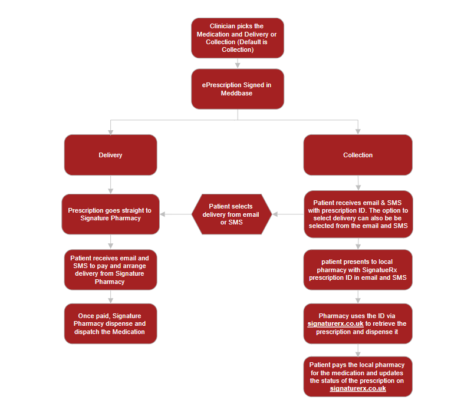
Patient Journey for Medication Delivery and Collection
This concludes the workflow and the selected drugs are now E-Prescribed.
You won’t be notified automatically of further changes to the status of the prescription. If a prescription needs to be cancelled or altered please contact SignatureRx directly:
Website: https://help.signaturerx.co.uk/en/
Email: support@signaturerx.co.uk